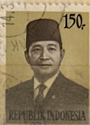
| SOURCE | TITLE| IMAGE MATCH | click to source page |
| www.alamy.com | INDONESIA - CIRCA 1974: a stamp printed in Indonesia ... | 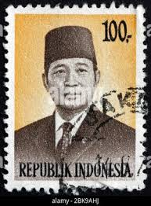 |
| www.hipstamp.com | DYNAMITE Stamps: Indonesia Scott #913 - USED | Asia ... | 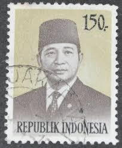 |
| commons.wikimedia.org | File:Soeharto, 65rp (undated).jpg - Wikimedia Commons | 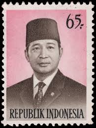 |
| www.ebay.ca | Indonesia 1951 100 sen Achmed Sukarno Conefo Used postal ... | 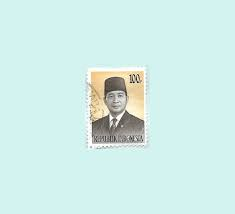 |
| www.alamy.com | INDONESIA - CIRCA 1974: A stamp printed in Indonesia shows ... | 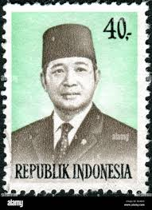 |
| www.ebid.net | INDONESIA, President Suharto, blue 1976, 200Rp, #2 on eBid ... | 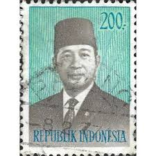 |
| www.ebay.ca | INDONESIA 1965 Very Fine Mint Stamps Hinged/ Glued on List ... | 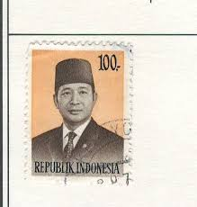 |
| colnect.com | Indonesia: President Suharto, 1983 : US$ 0,06 dari jokriwi ... | 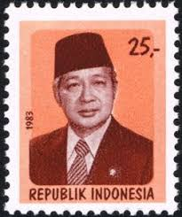 |
| commons.wikimedia.org | File:Stamp of Indonesia - 1983 - Colnect 256008 - President ... | 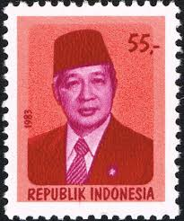 |
| www.shutterstock.com | Postage Stamps Indonesia Stamp Printed Indonesia Stock ... | 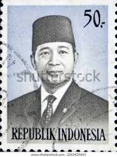 |
| www.dreamstime.com | Suharto Circa Stock Photos - Free & Royalty-Free Stock ... | 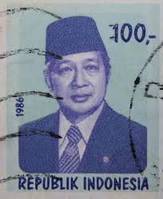 |
| www.123rf.com | INDONESIA - CIRCA 1980: A Stamp Printed In Indonesia Shows ... | 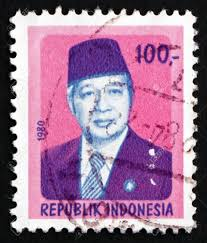 |
| www.vecteezy.com | Sidoarjo, Jawa timur, Indonesia, 2022 - philately with the ... | 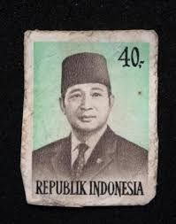 |
| www.threads.com | Mao Stamps (@stampsmao) • Threads, Say more | 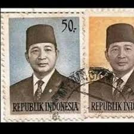 |
| www.istockphoto.com | Suharto Stamp Stock Photo - Download Image Now - Adult ... | 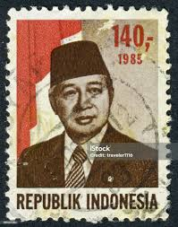 |
| in.pinterest.com | Pin on Vintage Indonesian Design | 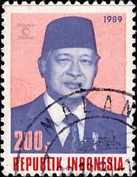 |
| www.stampcollectingblog.com | Many faces of Indonesian Suharto definitive postage stamps ... | 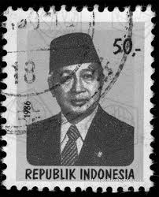 |
| historica.fandom.com | Mohammad Husni Thamrin | Historica Wiki | Fandom | 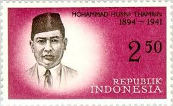 |
| www.old-stamps.com | Soekarno / Republik Indonesia 1957 | 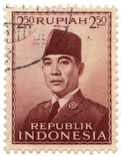 |
| www.lastdodo.com | Haji Muhammad Suharto [1921-2008] Stamp catalogue - LastDodo | 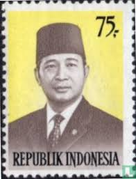 |
| www.shutterstock.com | Pasuruan Indonesia August 29 2025 Stamp Stock Photo ... | 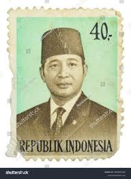 |
| www.ebay.com | Indonesia stamps - President Suharto (1986-1990-1993) -used ... | 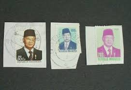 |
| colnect.com | Stamp: President Suharto (Indonesia(President Suharto) Mi:ID ... | 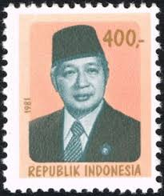 |
| www.facebook.com | Rare Stamps of the World (@World.rarestamp) • Facebook | 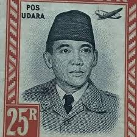 |
| en.todocoleccion.net | indonesia, 1974, presidente suharto, yvert 708 - Buy Antique ... | 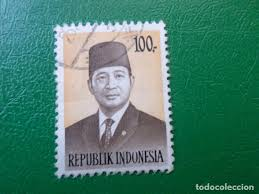 |
| www.dreamstime.com | A Canceled 700 Rupiah Republic of Indonesia Postage Stamp ... | 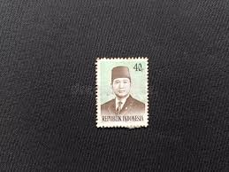 |
| commons.wikimedia.org | File:Stamp of Indonesia - 1980 - Colnect 255251 - President ... | 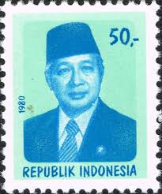 |
| en.wikipedia.org | Suharto - Wikipedia | 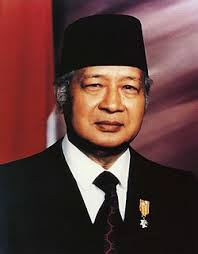 |
| shopee.co.id | Jual Perangko Indonesia Tahun 1974 | Shopee Indonesia | 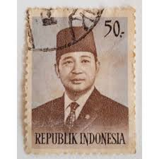 |
| www.alamy.com | postage stamp printed in Indonesia with portrait image of ... | 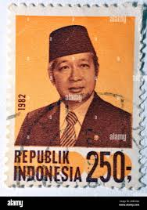 |
| www.pinterest.com | 10 Indonesia ideas to save today | postal stamps, stamp ... | 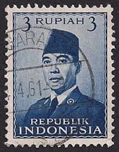 |
| picryl.com | Aung San and Daw Khin Kyi, 1942 - PICRYL - Public Domain ... | 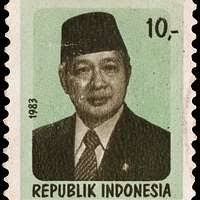 |
| www.wikidata.org | Mohammad Said - Wikidata | 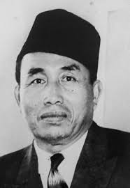 |
| www.ebid.net | JAPAN, Nagaoka Hantaro, Atomic Models, lilac 2000, 80¥ on ... | 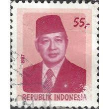 |
| www.istockphoto.com | Postage Stamp Stock Photo - Download Image Now - Black ... | 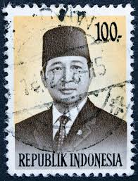 |
| kyotoreview.org | The New Normal: Indonesian Democracy Twenty Years after ... | 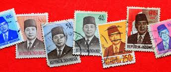 |
| shopee.co.id | Jual Perangko Indonesia 2 | Shopee Indonesia | 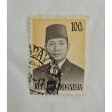 |
| www.shutterstock.com | April 26 2025 Jakarta Indonesia Postage Stock Photo ... | 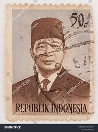 |
| www.ebay.com | 1985 Indonesia - President Suharto - Pair 350 Rp Stamps | eBay | 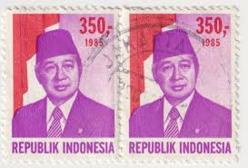 |
| tonymidiartworks.com | Tonymidi Artworks - PORTRAIT PROJECT | 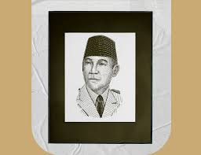 |
| postcardbuzz.com | Jakarta, Indonesia – Postcard Buzz | 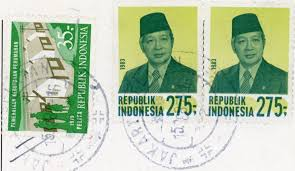 |
| www.onthisday.com | Suharto (2nd President of Indonesia) - On This Day | 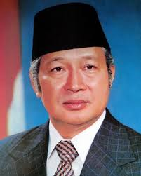 |
| www.dreamstime.com | President Suharto, Serie, Circa 1986, Editorial Stock Photo ... | 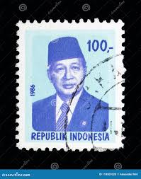 |
| military-history.fandom.com | Ernest Douwes Dekker | Military Wiki | Fandom | 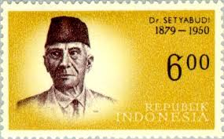 |
| www.osta.ee | i727 varia leiunurk (247529782) - Osta.ee | 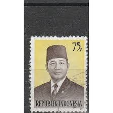 |
| www.lowensteyn.com | Indonesia between 1908 and 1928 | 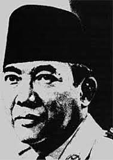 |
| www.posindonesia.co.id | Prangko Para Tokoh Indonesia | 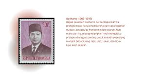 |
| www.youtube.com | Indonesia Stamps - President Suharto (1974-1976), 1974 - YouTube | 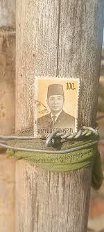 |
| en.wikipedia.org | Soekiman Wirjosandjojo - Wikipedia | 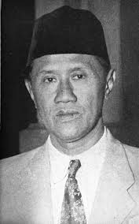 |
| www.alamy.com | President suharto hi-res stock photography and images - Alamy | |
| kids.kiddle.co | Suharto Facts for Kids | |
| commons.wikimedia.org | File:Stamp of Indonesia - 1981 - Colnect 255674 - President ... | |
| stampden.com | Browse Listings in Asia > Indonesia - Page 5 of 10 - 10 ... | |
| www.bocs.hu | CSI 1998 december - Indonézia |  |
| www.instagram.com | My best money style drawing collections, enjoy guys!!! If ... | |
| colnect.com | Stamp: President Suharto (Indonesia(President Suharto) Mi:ID ... | |
| stamps.sellosmundo.com | President Sukarno. Indonesia Asia ref. 437677 | |
| www.reddit.com | In 1949, the Indonesian government released a stamp series ... | |
| www.shutterstock.com | Indonesia Circa 1979 Stamp Printed Indonesia Stock Photo ... |
.jpg){kind=link}
{kind=link}
{kind=link}
{kind=link}